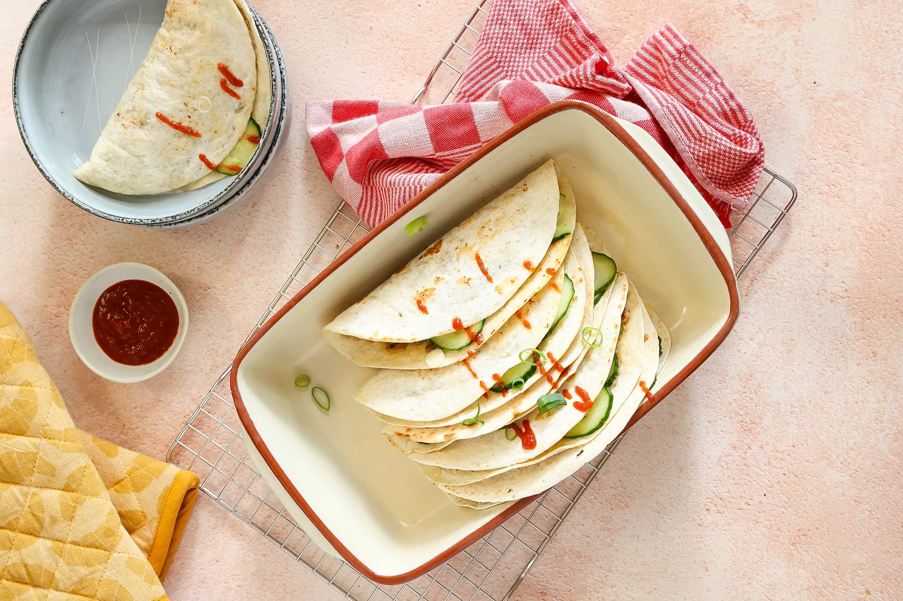

dumpling tacos

Ingredienten
- 300 gr kipgehakt
- 6 kleine wraps
- 1 tl koriander
- 2 bosuien
- 2 tenen knoflook
- 1,5 el sojasaus (Go-Tan)
- 1 tl vissaus (Go-Tan)
- 2 tl azijn
- snufje zout en peper
- 1/2 komkommer
- lekker met sweet chili saus
Bereiding
- Snijd de bosuien in ringen.
-
Snijd/schaaf de komkommer in dunne plakjes. Meng de komkommer met de
azijn en een snufje zout en peper.
-
Doe het gehakt, uitgeperste tenen knoflook, de helft van de bosui,
sojasaus, vissaus, koriander, snufje zout en peper in een kom. Meng door
elkaar.
-
Verdeel het gehaktmengsel over 6 wraps en smeer uit zodat er een dunne
laag gehakt op elke wrap zit. Druk aan met een lepel/vork.
-
Giet een scheutje olie in een pan en leg een wrap in de pan (met de kant
waar het gehakt op zit naar beneden).
-
Bak de wrap totdat het gehakt gaar is en draai de wrap dan om. Schep de
wrap uit de pan en leg op een bord. Ga zo door totdat je alle wraps hebt
gebakken.
-
Beleg de wrap met wat extra bosui en de komkommer. Lekker met sweet
chili saus.